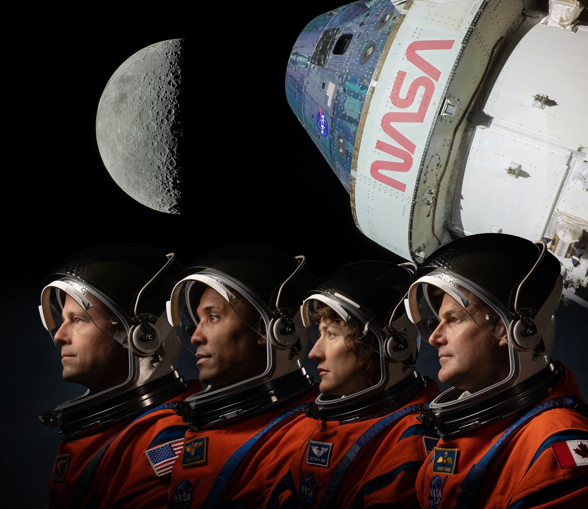
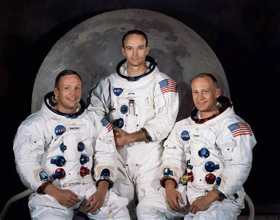
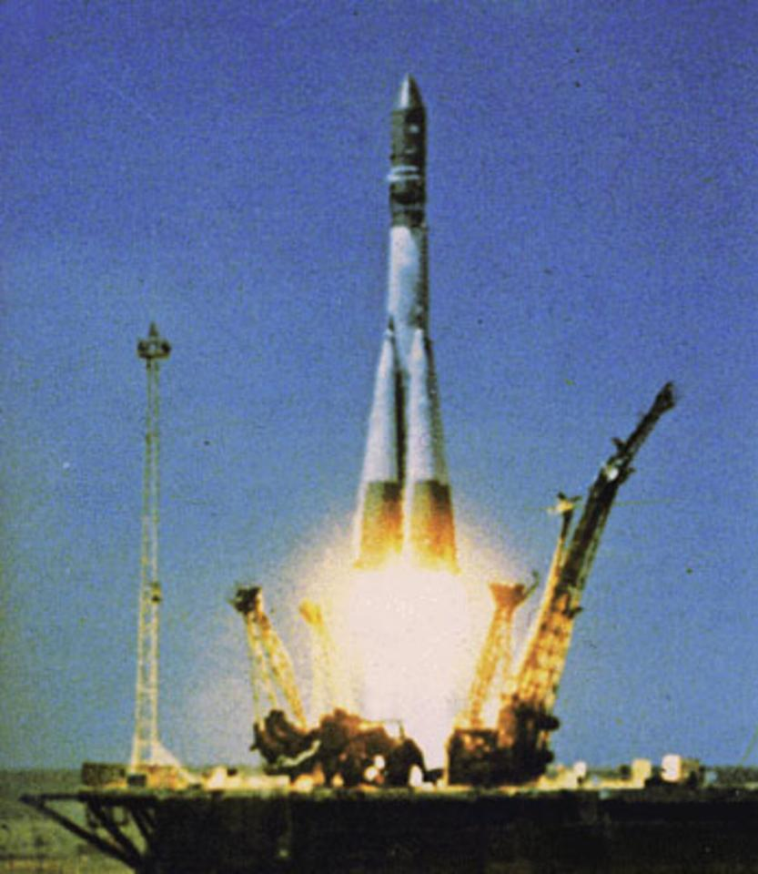
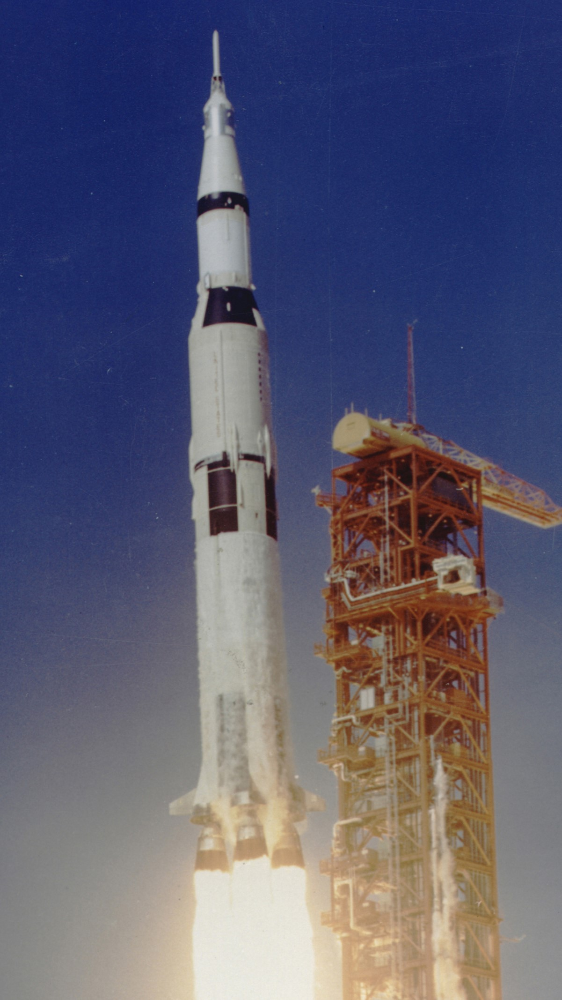
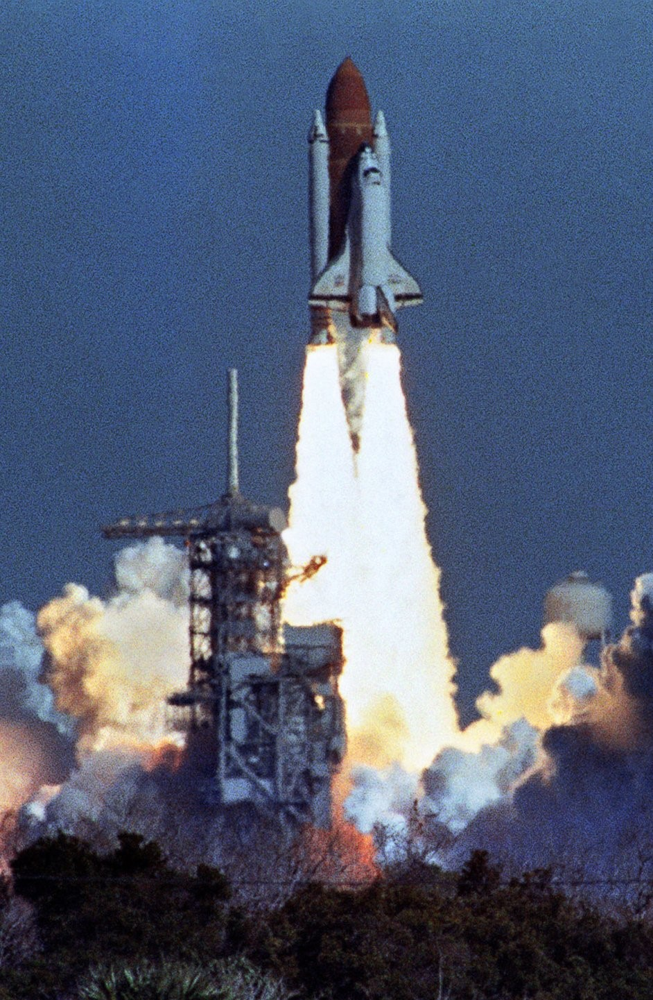
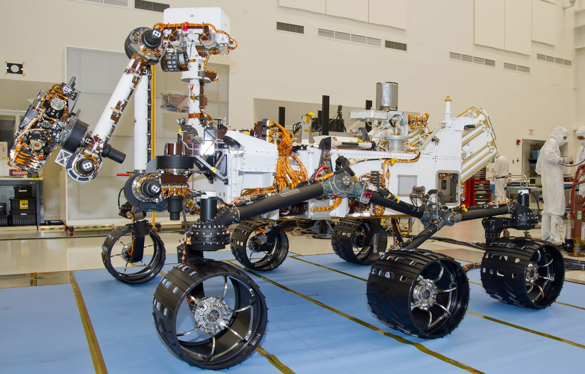
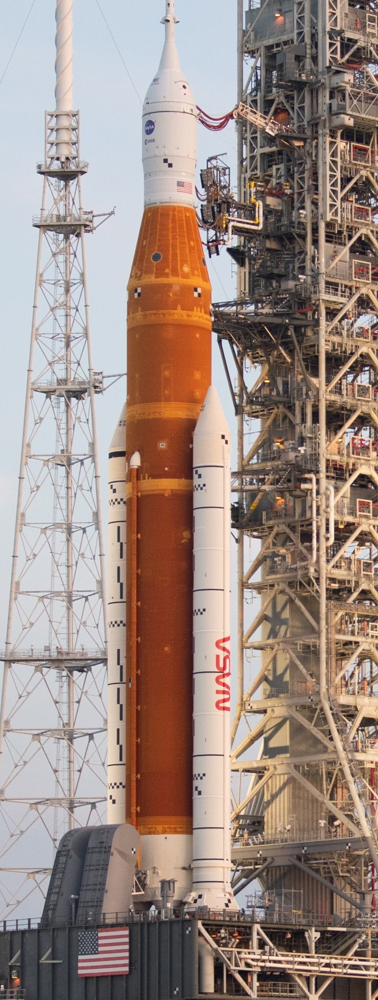

Najważniejsze Misje Kosmiczne
Loty kosmiczne na przestrzeni lat nie tylko zmieniły nasze postrzeganie wszechświata, ale także znacząco wpłynęły na rozwój technologii, które dziś towarzyszą nam na co dzień. Od momentu, gdy Jurij Gagarin jako pierwszy człowiek znalazł się w kosmosie, przez lądowanie Neila Armstronga na Księżycu, po współczesne misje na Marsa, eksploracja kosmosu przyczyniła się do opracowania wielu nowatorskich rozwiązań.   Technologie kosmiczne mają szerokie zastosowanie, począwszy od satelitów komunikacyjnych, które umożliwiają transmisję danych na całym świecie, poprzez systemy monitorowania Ziemi, które pomagają w badaniach nad globalnym ociepleniem, aż po rozwój systemów nawigacyjnych, takich jak GPS, które zrewolucjonizowały transport i codzienną komunikację. Ponadto, materiały i technologie opracowane na potrzeby misji kosmicznych znalazły zastosowanie w medycynie, elektronice, a nawet w codziennych przedmiotach użytkowych, takich jak filtry do wody czy pianki używane w materacach. Każda z tych misji była krokiem w stronę lepszego zrozumienia naszego miejsca we wszechświecie i poszerzenia granic nauki. Współczesne misje, takie jak plany kolonizacji Marsa czy powrót człowieka na Księżyc w ramach programu Artemis, otwierają nowe perspektywy, które jeszcze niedawno wydawały się być jedynie domeną literatury science fiction.
| Misja | Data | Statek kosmiczny | Astronauci | Osiągnięcia | Zdjęcie |
| Wostok 1 | 12 kwietnia 1961 | Wostok 1 | Jurij Gagarin | Pierwszy człowiek w kosmosie |  |
| Apollo 11 | 16-24 lipca 1969 | Apollo 11 | Neil Armstrong, Buzz Aldrin, Michael Collins | Pierwsze lądowanie człowieka na Księżycu |  |
| Challenger STS-51-L | 28 stycznia 1986 | Space Shuttle Challenger | Francis Scobee, Michael Smith, Judith Resnik, Ronald McNair, Ellison Onizuka, Gregory Jarvis, Christa McAuliffe | Tragiczna eksplozja promu, śmierć całej załogi |  |
| Curiosity Rover | 6 sierpnia 2012 | Mars Science Laboratory | Bezzałogowy | Łazik badający powierzchnię Marsa |  |
| Artemis I | 16 listopada 2022 | Orion | Bezzałogowy | Pierwsza misja nowego programu księżycowego Artemis |  |